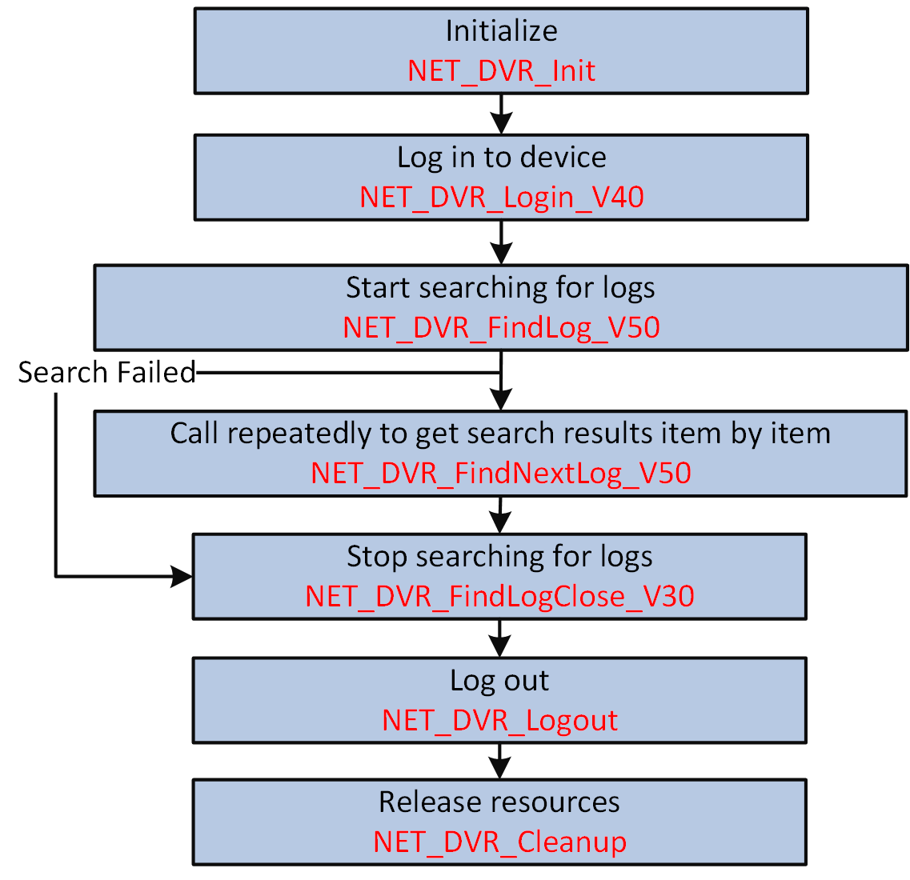

You can search for the device logs (including alarm, exception, operation, event, and so on) by time or type, and get the searched log information.
Make sure you have called NET_DVR_Init to initialize the programming environment.
Make sure you have called NET_DVR_Login_V40 to log in to the device.

Figure 1 Programming Flow of Searching for Logs#include <stdio.h>
#include <iostream>
#include "Windows.h"
#include "HCNetSDK.h"
using namespace std;
void main() {
//---------------------------------------
//Initialize
NET_DVR_Init();
//Set connection time and reconnection time
NET_DVR_SetConnectTime(2000, 1);
NET_DVR_SetReconnect(10000, true);
//---------------------------------------
//Log in to device
LONG lUserID;
//Login parameters, including device IP address, user name, password, andso on
NET_DVR_USER_LOGIN_INFO struLoginInfo = {0};
struLoginInfo.bUseAsynLogin = 0; //Synchronous login mode
strcpy(struLoginInfo.sDeviceAddress, "192.0.0.64"); //IP address
struLoginInfo.wPort = 80; //HTTP port
strcpy(struLoginInfo.sUserName, "admin"); //User name
strcpy(struLoginInfo.sPassword, "abcd1234"); //Password
//Device information, output parameters
NET_DVR_DEVICEINFO_V40 struDeviceInfoV40 = {0};
lUserID = NET_DVR_Login_V40(&struLoginInfo, &struDeviceInfoV40);
if (lUserID < 0)
{
printf("Login failed, error code: %d\n", NET_DVR_GetLastError());
NET_DVR_Cleanup();
return;
}
NET_DVR_FIND_LOG_COND struFindLogCond = { 0 };
struFindLogCond.dwMainType = 0;
struFindLogCond.dwSubType = 0;
struFindLogCond.dwSelectMode = 0;
struFindLogCond.bOnlySmart = FALSE;
struFindLogCond.struStartTime.wYear = 2019;
struFindLogCond.struStartTime.byMonth = 11;
struFindLogCond.struStartTime.byDay = 2;
struFindLogCond.struStartTime.byHour = 9;
struFindLogCond.struStartTime.byMinute = 0;
struFindLogCond.struStartTime.bySecond = 0;
//struFindLogCond.struStartTime.byISO8601 = 0;
//struFindLogCond.struStartTime.cTimeDifferenceH = 0;
//struFindLogCond.struStartTime.cTimeDifferenceM = 0;
struFindLogCond.struEndTime.wYear = 2019;
struFindLogCond.struEndTime.byMonth = 11;
struFindLogCond.struEndTime.byDay = 3;
struFindLogCond.struEndTime.byHour = 9;
struFindLogCond.struEndTime.byMinute = 0;
struFindLogCond.struEndTime.bySecond = 0;
//struFindLogCond.struEndTime.byISO8601 = 0;
//struFindLogCond.struEndTime.cTimeDifferenceH = 0;
//struFindLogCond.struEndTime.cTimeDifferenceM = 0;
//Search for logs
LONG lLogHandle = NET_DVR_FindDVRLog_V50(lUserID, &struFindLogCond);
if (lLogHandle < 0)
{
printf("find log fail, last error %d \n", NET_DVR_GetLastError());
return;
}
NET_DVR_LOG_V50 struLogInfo = {0};
while(true)
{
LONG lRet = NET_DVR_FindNextLog_V50(lLogHandle, &struLogInfo);
if (lRet == NET_DVR_FILE_SUCCESS)
{
printf("log:%04d-%02d-%02d %02d:%02d:%02d\n", struLogInfo.struLogTime.wYear, struLogInfo.struLogTime.byMonth, struLogInfo.struLogTime.byDay,\
struLogInfo.struLogTime.byHour, struLogInfo.struLogTime.byMinute, struLogInfo.struLogTime.bySecond,);
}
else if (lRet == NET_DVR_ISFINDING)
{
printf("finding \n");
Sleep(5);
continue;
}
else if ((lRet == NET_DVR_NOMOREFILE) || (lRet == NET_DVR_FILE_NOFIND))
{
printf("find ending \n");
break;
}
else
{
printf("find log fail for illegal get file state \n");
break;
}
}
//Stop searching for logs
if (lLogHandle >= 0)
{
NET_DVR_FindLogClose_V30(lLogHandle);
}
//Log out
NET_DVR_Logout(lUserID);
//Release resources
NET_DVR_Cleanup();
return;
}
Call NET_DVR_Logout and NET_DVR_Cleanup to log out and release all resources.